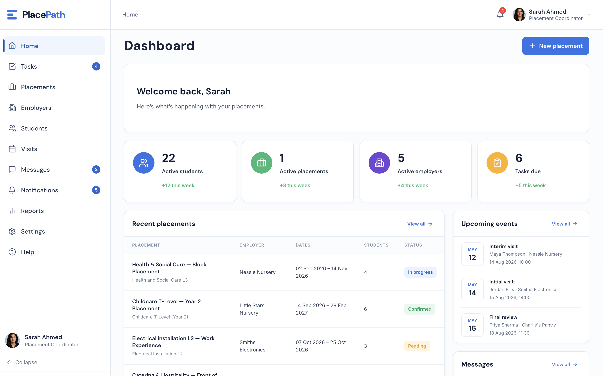
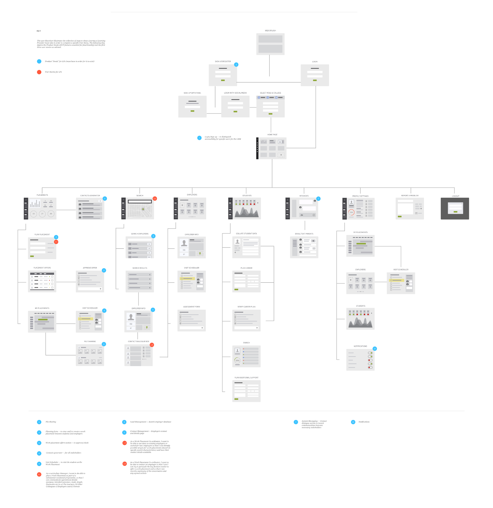
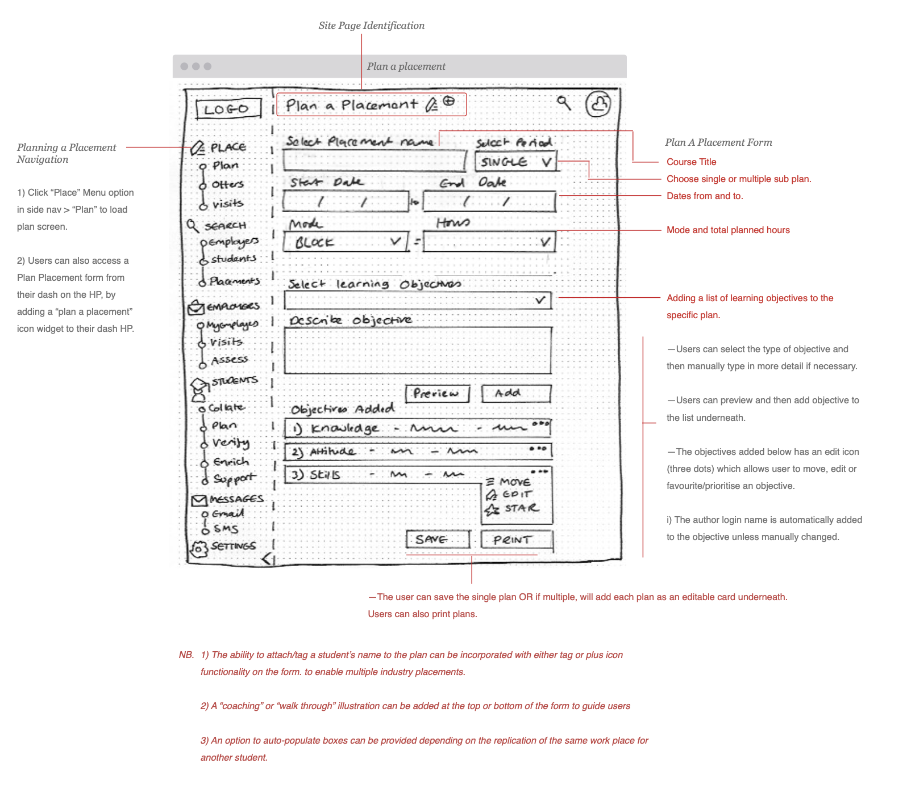
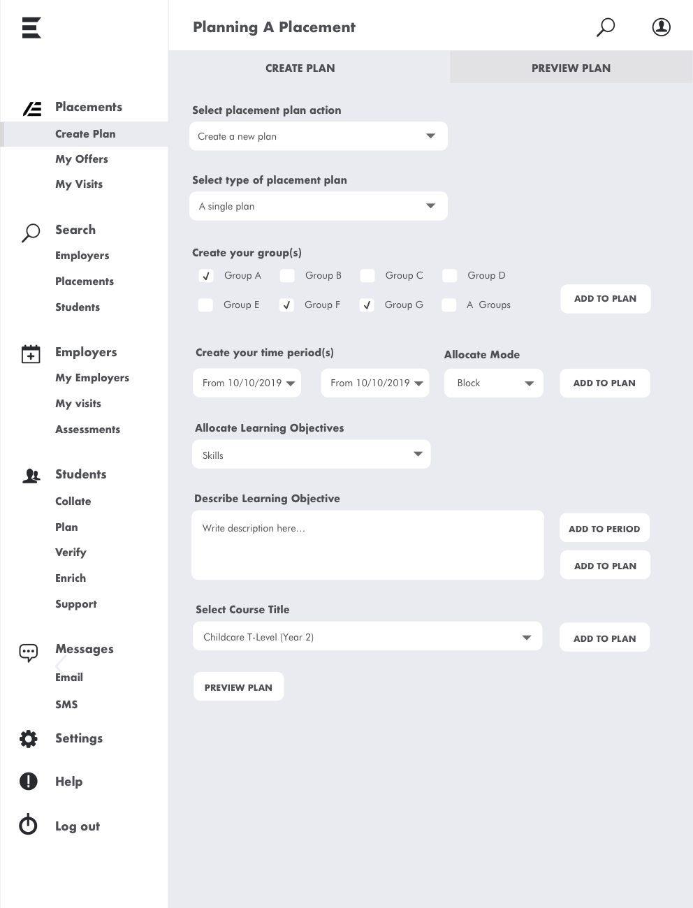
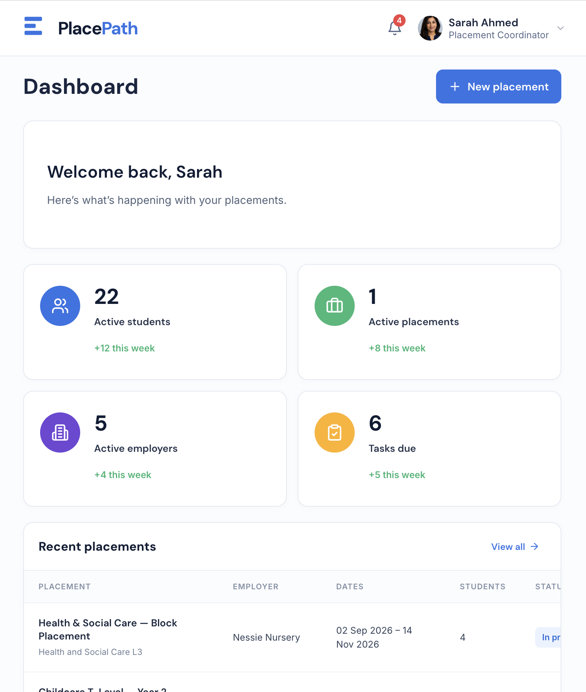
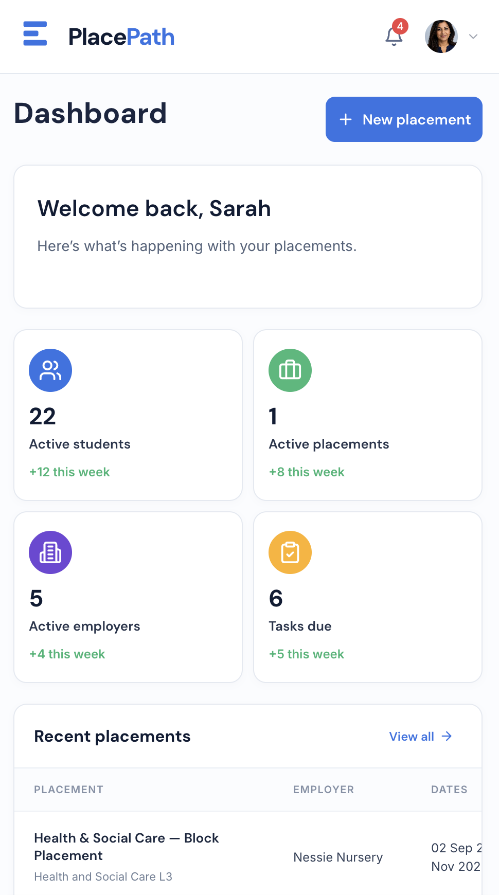

End-to-end product design case study · Education technology
PlacePath: an apprentice
placement management product
Turning complex requirements across learning providers, employers and students into a focused MVP and connected, role-based workflow.
As the independent Product Design Consultant, I led phase one from product definition and service mapping through prototyping, responsive UI and developer handoff.

- Role
- Lead Product Design Consultant
- Users
- Placement teams, employers and students
- Product scope
- Responsive placement management MVP
- Ownership
- Definition, flows, prototypes, UI and handoff
Product outcome
Explore the working product
I evolved the original workflow into a mobile-first, accessible prototype connecting placement coordinators, employers and students.
01 · Understand
Unify a fragmented placement service
The brief combined overlapping needs across learning providers, employers and students without a single coherent experience. I turned those requirements into a defined MVP, connected service journey and implementation-ready interface.
02 · Define
Focus the operational MVP
I prioritised the tasks placement teams needed to operate the service, separating them from valuable but non-essential future features.
03 · Design
Map the journey, then increase fidelity
I mapped the wider service before testing the planning journey through low- and medium-fidelity wireframes.



06 · Deliver
Deliver a foundation ready to build
I delivered responsive UI, a clickable prototype, style guidance and production assets for developer handoff.


Next, I would validate the highest-risk workflows with placement teams and measure task completion, clarity and status comprehension.